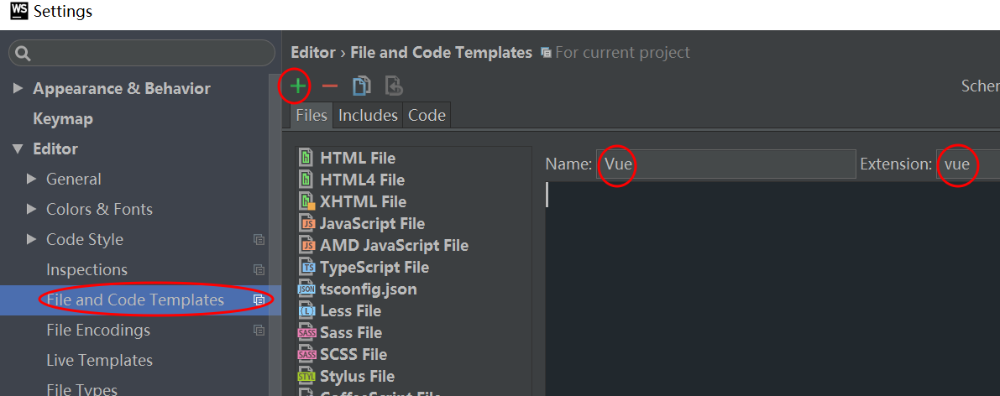

vue基本语法和webpack初级(8.4)
- vue是一个渐进式框架，关注视图层
- 组件 高度的封装
- 虚拟DOM树，Virtual Dom就是在js中模拟DOM对象树来优化DOM操作的一种技术或思路
webstrom配置
- 推荐使用webstrom2016
- vue智能提示配置
- File>Settings>Plugins=>vue.js(Browse repositories...)
- File>Settings>Languages&Frameworks>ECMAScript 6
- Editor>File and Code Templates（在File Types查看是否配置成功）>+ 
vue基本语法
vue基本使用
<!--引入vue.js文件--> <script src=vue.min.js></script> <!--我们在html页面留了个坑--> <div id="app"> {{ msg }} </div> <script> // 创建vue的一个实例化对象 var vm = new Vue({ el:'#app', data:{ msg:'欢迎来到vue课程' } }) </script>v-model和v-text，v-html
<!--v-model是双向绑定的--> <!--v-model是vue中唯一一个双向绑定的,其他的都不是--> <input v-model="title" type="text"> <!--v-text一般用于除了input以外的其他标签--> <span v-text="msg"></span> <!--v-html一般用于解析html--> <div id="app"> <span v-html="msg"></span> </div> <script> var vm = new Vue({ el: '#app', data: { msg: '<h1>天气不错</h1>' } }) </script>v-bind对标签属性值进行绑定，两种写法
<div id="app"> <a v-bind:title="tip" v-bind:sdjfoisodifwfe="tip">这是个a标签</a> <!--v-bind的简写形式--> <a :title="tip">这是个a标签</a> </div> <script> var vm = new Vue({ el:'#app', data:{ title:'可以出去玩', tip:'这是个title' } }) </script>v-on绑定事件，两种写法
<div id="app"> <!--v-on一般是进行事件处理的--> <button v-on:click="btnClicked">按钮</button> <!--v-on有一个简写形式--> <button @click="btnClicked"></button> </div> <script> // 这样写可以接收到事件,但是不推荐这样写 // function btnClicked() { // alert(1) // } var vm = new Vue({ el:'#app', data:{ title:'我很高兴来到这里' }, methods:{ btnClicked(){ alert(2) } } }) </script>- v-if隐藏后连代码都没有了，只留下一个注释占位符;v-show 隐藏后代码还在，只是设置display:none
<div id="app"> <span v-if="isTrue" v-text="msg"></span> <!-- <span v-show="isTrue" v-text="msg"></span> --> <button v-on:click="click">按钮</button> </div> <script> var vm = new Vue({ el:'#app', data:{ msg:'天气不错', isTrue:true }, methods:{ click(){ this.isTrue = !this.isTrue } } }) </script> - v-for三种用法
<div id="app"> <!--v-for的第一种用法--> <ul> <li v-for="item in names"> {{item}} </li> </ul> <!--v-for的第二种用法--> <ul> <li v-for="(item,index) in names"> {{item}}------{{index}} </li> </ul> <!--v-for的第三种用法--> <ul> <li v-for="(value,key,index) in user"> {{value}}---{{key}}-=---{{index}} </li> </ul> </div> <script> var vm = new Vue({ el:'#app', data:{ names:['狼厂','鹅厂','鸟厂','马厂','数字工厂'], user:{name:'老梅',age:'17.5'} } }) </script> 私有组件和全局组件
- 写在Vue对象中为components私有组件时，组件名称不能大写，名称中可以有-。
- 组件标签在使用时内部不能带有内容，内容会被定义组件时模块中的内容替换。
注意：template属性必须给根元素,创建全局组件必须在Vue对象实例化前进行
//私有组件 <div id="app"> <privatecomponent></privatecomponent> </div> <script> var vm = new Vue({ el:'#app', components:{ 'privatecomponent':{ template:'<h1>这是第一个私有组件</h1>' } } }) </script> //全局组件的定义 <div id="app"> <my-component/> </div> <div id="app1"> <my-component></my-component> </div> <script> Vue.component('my-component',{ template:'<my-haha</my-haha>' }) Vue.component('my-haha',{ template:'<h1>my-haha的使用</h1>' }) var vm = new Vue({ el:'#app', }) var vm1 = new Vue({ el:'#app1' }) </script>
私有过滤器和全局过滤器
管道前面的输出等于后面的输入，管道符前面的变量输出成为管道符后面函数的输入
//私有过滤器 <div id="app"> {{ msg | toLower }} </div> <script> var vm = new Vue({ el:'#app', data:{ msg:'MSDJFSOIFDWOEIF' }, filters:{ // 实现一个小写转化的过滤器 toLower(input){ return input.toLowerCase() } } }) </script> //全局过滤器 <div id="app"> {{title | toUpper}} </div> <script> Vue.filter('toUpper',function (input) { return input.toUpperCase() }) var vm = new Vue({ el:'#app', data:{ title:'sdojfiodifosdfs' } }) </script>
router模块和传值：vue-router.min.js
<script src="vue.min.js"></script>
<script src="vue-router.min.js"></script>
<div id="app">
<!--路由传值的方式-->
<a href="#/share/2">go</a>
<!--router-link是对a标签的封装，推荐使用-->
<router-link to="/share/1">go</router-link>
<!--router-view路由内容专用填坑-->
<router-view></router-view>
</div>
<script>
//全局组件
var share= Vue.component('share',{
data(){ //添加全局临时变量
return {
number:''
}
},
//这个方法是在当前组件全部加载完成以后调用的方法
created(){ //调用外面传递的值
this.number=this.$route.params.id
},
props:['id'], //接收外面传递的值
template:'<h1>我的天啊{{number}}</h1>' //template必须给根元素
});
var rt=new VueRouter({
routes:[ //存放路由信息的数组
{name:'share',path:'/share/:id',component:share}
]
});
var vm =new Vue({
el:'#app',
router:rt, //关联路由
data:{
title:'静态网站'
}
})
</script>
$http异步模块：vue-resource.min.js
//get
<script src=vue.min.js></script>
<script src=vue-resource.min.js></script>
<body>
<div id="app">
{{title}}
<br>
<button v-on:click="btnBeClicked">发送get请求</button>
<br>
{{message}}
</div>
<script>
var vm = new Vue({
el:'#app',
data:{
title:'get方法的介绍',
message:[]
},
methods:{
btnBeClicked(){
// 发送请求
var url = 'http://182.254.146.100:8899/api/getlunbo'
this.$http.get(url).then(
function (data) {
this.message = data.body.message
},
function (err) {
}
)
}
}
})
</script>
// post
var url = 'http://182.254.146.100:8899/api/getlunbo'
this.$http.post(url,{content:'xxxxxxxx'},{emulateJSON:true}).then(
function (response) {
},
function (err) {
console.log(err)
}
)
// JSONP
this.$http.jsonp(url).then(
function (response) {
},
function (err) {
console.log(err)
}
)
webpack
- 插件 Plugins
- 出口和入口的设置
- 加载器 Loaders
- 安装(先npm init初始化环境)
- 第一步 npm i webpack -g （只要安装一次）
- 第二步 npm install webpack --save-dev （创建一个新项目就安装一次）
- -dev 开发依赖，打包就不会带这个包
- 第三步
- 在实际开发环境中，存在多个配置，发布和开发以及其它运行不同的配置
- webpack.develop.config.js //开发时候的配置
- webpack.publish.config.js //发布时候的配置
- webpack --config webpack.develop.config.js //运行打包
- webpack.config.js 只有一个配置 cmd中执行webpack就可以了
- 第四部
- 加载器：去git上查找下载安装babel-loader的方法
- 看README.md或者git中查看配置方法。
- 第五步配置config(webpack.develop.config.js)
// webpack开发时候的配置文件
const path=require('path')
module.exports={
//webpack中的三大亮点之一：入口出口设置
entry:path.resolve(__dirname,'./src/app.js'),//入口
//出口设置，把项目打包的位置
output:{
path:path.resolve(__dirname,'dist'), //导出到指定的文件夹
filename:'tt.js' //导出的文件名
},
//webpack中的第二个亮点：加载器loader
module:{
rules:[
// babel-loader的加载器信息
{
test: /\.js$/,
exclude: /(node_modules|bower_components)/,
use: {
loader: 'babel-loader',
options: {
presets: ['env']
}
}
}
]
}
}
知识点
- vetur给vscode使用的vue语法提示高亮的插件
- Moment.js 日期过滤器
- npm run 名称 --可以直接使用package.json中scripts配置的快捷命令
- nrm test 测试镜像反应速度
- 安装webpack的文件夹名字不能叫webpack，程序会认为在webpack中安装webpack会报错
加载器和插件(8.5)
vue基本的三个组成部分：组件模板，项目入口，承载单页面
- 引入vue模块前要先下载
- npm i vue --save
// 一个拥有独立html，css，js的组件模板app.vue
<template>
<section>
<h1>苍茫的天涯是你的哎</h1>
<img src="./images/img1.gif" alt="">
</section>
</template>
<script></script>
<style>
h1{
background-color: hotpink;
}
</style>
//项目入口main.js文件
import Vue from 'vue' //导入vue.js
import app from './app.vue' //导入vue模板
const vm=new Vue({
el:'#app',
//必须使用箭头函数
render:create=>create(app) //渲染到index.html留的坑里
});
<!--进行展示的index.html页面-->
<div id="app">
<app></app>
</div>
<script src="./tt.js"></script>
加载器（本质上就是通过一些优化把开发代码转化为发布的代码）
- vue-loader 1.0配置中可以不写-loader，2.0必须写
- 加载器在使用前要先进行下载
- 三种加载器：ES6加载器，css加载器，图片加载器
- 先执行加载器，然后导入src中的文件，生成后在导出
- 加载器的两种配置方式，参考图片加载器
const path=require('path');
const webpack=require('webpack');
module.exports={
//webpack中的三大亮点之一：入口出口设置
entry:path.resolve(__dirname,'./src/main.js'),
//出口设置，把项目打包的位置
output:{
path:path.resolve(__dirname,'dist'), //导出到指定的文件夹
filename:'tt.js' //导出的文件名
},
//webpack中的第二个亮点：加载器loader
// 加载器解析.vue等格式的文件
module:{
rules:[
{ //把ES6解析到ES5的加载器 jsx（使代码混编，一个文件中写css，html，js）转化js，
test: /\.js$/,
exclude: /(node_modules|bower_components)/,
use: {
loader: 'babel-loader',
options: {
presets: ['env']
}
}
}, { //解析vue的加载器
test: /\.vue$/,
use: {
loader: 'vue-loader'
}
}, { //解析css的加载器
test: /\.css$/,
use: [ 'style-loader', 'css-loader' ]
}//解析图片加载器 url-loader
,
// {
// test: /\.(png|jpg|gif)$/,
// use: [
// {
// loader: 'url-loader',
// options: {
// limit: 8192
// }
// }
// ]
// }
{
test: /\.(png|jpg|gif)$/,
use:'url-loader?limit=25000&name=images/[name].[ext]'
//1byte=8bit(位) bit 小于这个限制则
//把图片转为base64字符串，这个时候可以base64字符串通过css设置背景图片减少图片http请求
}
]
}
}
插件(webpack第三个亮点：插件的使用)
插件分为两种：webpack自带的不需要安装，第三方的需要安装
webpack-dev-server（修改项目，打包文件自动更新服务）配置三部曲
本质上通过webpack内置的热更新插件实现
//1.下载 npm install webpack-dev-server --save-dev
//2.webpack.develop.config.js 配置
const webpack=require('webpack');
module.exports={
//...省略若干配置
devtool: 'eval',
devServer: {
contentBase: path.resolve(__dirname, './src'), // 当前服务器监听的路径
hot: true, // 热更新
port:8080, // 定义端口号
host: 'localhost',
open:true // 是否自动打开浏览器
openPage:"" //配置open:true时，必须给一个openPage:""默认配置
},
plugins: [
// html-webpack-plugin
new webpack.HotModuleReplacementPlugin(), //热更新插件
]
}
// 3.package.json配置
//"server":"webpack-dev-server --config webpack.develop.config.js --content-base src"
//npm run server
压缩插件（一般不用，效果不好），分离第三方包的插件，自动生成html的插件
- 压缩文件一般使用在命令中加-p,压缩比内置压缩插件效果更好（更小）
- "pb": "webpack --config webpack.publish.config.js -p",
- 自动生成html的插件是第三方插件
- html-webpack-plugin
const HtmlWebpackPlugin = require('html-webpack-plugin');
plugins:[
// 压缩插件(一般不用)
// new webpack.optimize.UglifyJsPlugin({
// beautify: false,
// mangle: {
// screw_ie8: true,
// keep_fnames: true
// },
// compress: {
// warnings: false,
// screw_ie8: true
// },
// comments: false
// }),
// 分离第三方的插件，不是我们自己写的模块
// 抽取第三方的插件（如vue.js） 所有第三方文件打包的文件
new webpack.optimize.CommonsChunkPlugin({name:'vendors',filename:'vendors.js'}),
// 自动生成html的插件
// new HtmlWebpackPlugin({
// title: 'My App',
// filename: 'index.html',
// template: 'src/index.html',
//
// })
new HtmlWebpackPlugin({
template: './src/index.html',
htmlWebpackPlugin: {
"files": {
"js": ["bundle.js","vendors.js"] //设置引用的文件，自动生成标签插入html中
}
},
// 进行压缩,情怀至上
minify: {
removeComments: true,
collapseWhitespace: true,
removeAttributeQuotes: true
}
}),
]
ESLint配置（编码规范）
- npm install eslint -g （可能需要配置本地 npm install eslint --save-dev）
- npm install babel-eslint -g（可能需要配置本地 npm install babel-eslint --save-dev）
- package.json的scripts中配置快捷命令
- "lint": "eslint --ext .js .vue src"
- 添加自定义代码规范，在全局根目录下添加文件.eslintrc.js
- 运行后eslint --init，根目录中将有一个.eslintrc文件
- 在webpack.develop.config.js开发配置文件中配置
//.eslintrc.js
// eslint的语法规则
module.exports = {
// 开启推荐配置信息
// "extends": "eslint:recommended",
// 默认情况下，ESLint 会在所有父级目录里寻找配置文件，一直到根目录。如果你想要你所有项目都遵循一个特定的约定时，这将会很有用，但有时候会导致意想不到的结果。为了将 ESLint 限制到一个特定的项目，在你项目根目录下的 package.json 文件或者 .eslintrc.* 文件里的 eslintConfig 字段下设置 "root": true。ESLint 一旦发现配置文件中有 "root": true，它就会停止在父级目录中寻找。
"root": true,
// 脚本在执行期间访问的额外的全局变量
// 当访问未定义的变量时，no-undef 规则将发出警告。如果你想在一个文件里使用全局变量，推荐你定义这些全局变量，这样 ESLint 就不会发出警告了。你可以使用注释或在配置文件中定义全局变量。
"globals" : {
"window":true,
"document":true,
"$":true
},
// 设置插件
// "plugins": [
// 'html'
// ],
// 设置解析器选项（必须设置这个属性）
"parserOptions": {
"ecmaVersion": 7,
"sourceType": "module",
"ecmaFeatures": {
"jsx": true,
// "arrowFunctions": true,
// "experimentalObjectRestSpread": true,
// "classes": true,
// "modules": true,
// "defaultParams": true
}
},
// 启用的规则及各自的错误级别
"rules" : {
// 禁止用console
"no-console":2,
// 禁止用分号
"semi":[1,'never'],
// 在同一个作用域中禁止多次重复定义
//"no-redeclare":1
},
// 指定你想启用的环境
"env": {
"browser": true,
"node": true
},
"parser": "babel-eslint"
};
//配置文件（config）配置信息
module.exports={
//。。。。其它各种配置
module:{
rules:[
// eslint-loader的配置信息
// exlint-loader的加载器配置信息
// 配置编码规范的时候需要ES6解析到ES5的加载器配置到其中
{
test: /\.js$/,
exclude: /node_modules/,
use: [
'babel-loader',
'eslint-loader'
],
//webpack配置改了，要修改配置方法
// query: {
// cacheDirectory: true
// }
},
{ //只是检查的时候用，调试时候注释
test: /\.vue$/,
enforce: 'pre',
include: /src/,
use: [{
loader: 'eslint-loader',
options: {
formatter: require('eslint-friendly-formatter') //
}
}]
},
// { //把ES6解析到ES5的加载器
// test: /\.js$/,
// exclude: /(node_modules|bower_components)/,
// use: {
// loader: 'babel-loader',
// options: {
// presets: ['env']
// }
// }
// },
//其它配置，各种加载器
]
},
}
- MUI-最接近原生APP体验的高性能前端框架
mui和mint-ui（8.7）
- mui和mint-ui先git把两个项目从githab上克隆下来（根据线上的demo到两个克隆的包里找代码）
- 然后npm把两个包下载到项目中。
vue模板
<template>
</template>
<!--scoped：保证样式只在组件内部使用-->
<style scoped>
</style>
<!--让编辑器识别ES6，不报错-->
<script type="text/ecmascript-6">
</script>
//一个页面级组件script标签中内容
import banner from './Tools/banner.vue'
import url from './Tools/Url.js'
export default{
data(){
return {
banners:[]
}
},
created(){
this.getBanner()
},
methods:{
getBanner(){
this.$http.get(`${url.HTTP}${url.SERVER_PATH}:${url.PORT}/api/getlunbo`).then(rel=>{
console.log(rel)
this.banners=rel.body.message
},rej=>{})
}
},
components: {
banner
}
}
//url-loader配置图片和字体解析
{ test: /\.(gif|jpg|png|woff|svg|eot|ttf)$/,
use: 'url-loader?limit=50000&name=[path][name].[ext]'}
//webpack入口js引入模块方式
import vueResource from 'vue-resource'
Vue.use(vueResource)
- linkActiveClass:'mui-active'路由模块的该属性可以配置选中a标签的类名。
- 打包代码执行顺序：先执行加载器，把内容导入到webpack,执行插件然后导出
- mui代理官网
- badge 徽标，类似于购物车上的红色小圆（显示数字）
- 图片设置环绕，图片过大（不用缩小图片）：background-repeat: round;
- Mockplus原型设计工具
组件传值，路由传值(8.8)
组件传值，路由传值
//组件调用传值 <banner :bannerdt="banners"></banner> //组件内部获取值 <script type="text/ecmascript-6"> export default{ //如果是路由传值要使用这种方式获取值使用,如果是组件传值，直接在模板里使用 methods:{ get(){ this.$route.params.id } } //组件传值，路由传值都要通过这种方式接收 props:['bannerdt'] } </script>- 动态生成router-link标签的两种方法
<router-link :to="{name:'newsinfo',params:{id:item.id}}"> <router-link v-bind='{to:"/newsDetail/"+item.id}'> - 好用的日期过滤器：momentjs
- IM即时通讯(网易云)
- face++人脸识别服务
- ping++可以简便使用多种支付方式的开发者平台
- white-space: nowrap;文字不换行
图片详情页，商品列表页（8.10）
- ref:获取修改表单原生的值
<textarea placeholder="请输入评论内容"></textarea> //this.$refs.textArea1.value 假请求：当配合安卓或ios开发的时候，需要调用底层（如拍照），这个时候可以发送一个请求，让安卓的同事去实现功能。
vue-picture-preview 图片预览组件，组件标签要放在图片的上方。
export default{
data(){
return{
isBack:true
}
},
methods:{
back(){
//路由对象，回撤
this.$router.go(-1);
}
},
//监控一个对象
watch:{
//url对象
'$route':function (newValue,oldValue) {
if(this.$route.path==="/home"){
this.isBack=false;
}else {
this.isBack=true;
}
}
}，
//注册页面所要用到的组件
components:{
banner
},
}
- style的scoped独立样式作用域
- 添加scoped之后，实际上vue在背后做的工作是将当前组件的节点添加一个像data-v-1233这样唯一属性的标识。
- 当然也会给当前style的所有样式添加[data-v-1233]这样的话，就可以使得当前样式只作用于当前组件的节点。
- 所以如果在父组件中修改子组件的样式不能加scoped属性。
动画实现，组件向父组件传值（8.11）
传值的两种方式
父子组件之间的传值
//子组件 export default{ data(){ return { number:1 } }, methods:{ add(){ this.number++ document.querySelector("#numb").innerText=this.number this.submitCount() }, jian(){ if(this.number>1){ this.number-- document.querySelector("#numb").innerText=this.number this.submitCount() } }, submitCount(){ this.$emit('count',this.number)//count：父组件接收值的标记 } } } //父组件 //父组件调用是监控count标记把值传入getCount方法中。 <number v-on:count="getCount"></number> methods:{ //通过方法的形式获取子组件传递的值 getCount(num){ this.count=num } }没有直接关联的组件传值
//在一个js文件中定义一个独立的vue对象保存值（中转站）
import Vue from 'vue'
export var mddata=new Vue() //导出一个vue
//传值的组件
//使用这个值的地方进行引用
import {mddata} from './Tools/middledata'
//传递值组件调用的方法
mddata.$emit('shopcar',this.count)
//获取值的组件，值传递的约定标识shopcar
import {mddata}from './components/Tools/middledata'
mddata.$on('shopcar',function (number) {
})
动画实现
- 贝塞尔曲线：可以设置动画运动轨迹速度的快慢
js钩子hook》中间件，动画经过的事件就是一系列的中间件
//对要进行运动的元素设置css transition: all 1s cubic-bezier(.56,-0.42,.36,.59); //设置元素在运动时经过的方法 <transition v-on:before-enter="beforeEnter" v-on:enter="enter" v-on:after-enter="afterEnter" > <div v-show="isshow" class="bill"></div> </transition> // 在methods中设置动画要调用的方法 // 进入之前调用的一个方法 beforeEnter: function (el) { el.style.transform = "translate3d(0,0,0)" }, // 进入时候调用的方法 enter: function (el, done) { var offset = el.offsetWidth //设置这个使元素感觉到属性在发生变化 el.style.transform = "translate3d(60px,303px,0)" done() }, // 进入完成以后调用的方法 afterEnter: function (el) { this.isshow = !this.isshow },
vue生命周期，indexdb数据库，两种手机端app打包方式（8.13）
- 关于Vue实例的生命周期


- 两种手机端app打包方式
- dcloud：源码会泄露给第三方
- HTML5+ 》 HBuilder
- 本地环境：布置环境麻烦
- 生成手机app的环境配置： java jdk和安卓（2.2.2.0）sdk及其环境变量；全局安装ionic(开发工具) cordova（打包工具）包
- java jdk安装成功：cmd运行java -version和javac成功
- 安卓（2.2.2.0）sdk：可以安装配置不够，还要通过SDK Manager.exe继续安装
- npm i -g ionic cordova
- 生成一个app项目：ionic start ioicApp（项目名称）
- cordova run android 打安装包
- 生成手机app的环境配置： java jdk和安卓（2.2.2.0）sdk及其环境变量；全局安装ionic(开发工具) cordova（打包工具）包